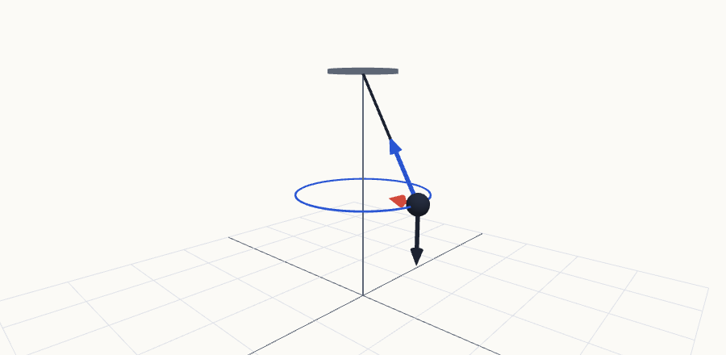
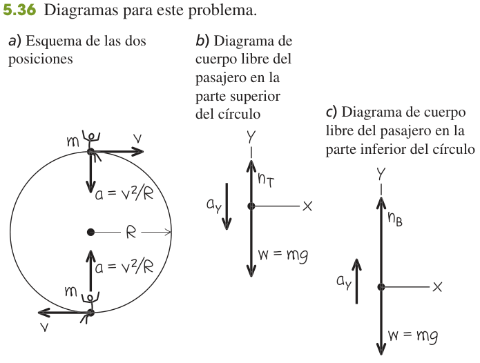

Aplicación de las leyes de Newton
Convertir $\sum\vec F=m\vec a$ en un método fijo: cuerpo libre, rampas, cuerdas y poleas, fricción y movimiento circular. Es el tema donde se resuelve la mayoría de los problemas de dinámica del examen.
El tema en 5 minutos P
Este tema no trae leyes nuevas. Usa $\sum\vec F=m\vec a$ (tema 4) con un método fijo. Casi todo problema se reduce a: un dibujo de las fuerzas sobre cada cuerpo, una ecuación por eje y una relación extra (fricción, cuerda, círculo).
Necesitas: componentes de un vector (T1), $v^2=v_0^2+2a\Delta x$ (T2), $a_{rad}=v^2/R$ (T3) y las leyes de Newton con el diagrama de cuerpo libre (T4). Se usa $g=9{,}80\ \text{m/s}^2$ salvo que el enunciado diga otro valor.
El método en 4 pasos (úsalo siempre, en este orden)
Las 6 fórmulas que hay que saber
| Fórmula | Cuándo se usa |
|---|---|
| $\sum F=0$ en cada eje | El cuerpo está parado o va a velocidad constante (cuerdas, rampa con cable). |
| $w_\parallel=mg\sin\alpha$, $\;n=mg\cos\alpha$ | Hay una rampa y no hay otra fuerza perpendicular a ella. |
| $f_k=\mu_k n$ | El cuerpo desliza. Calcula antes $n$ (¡no siempre es $mg$!). |
| $f_s\le\mu_s n$ | El cuerpo no desliza. Solo vale $=\mu_sn$ «a punto de deslizar». |
| Cuerda ideal: misma $T$ y misma $\lvert a\rvert$ | Dos cuerpos unidos. Suma las dos ecuaciones y la $T$ se cancela. |
| $\sum F_{rad}=mv^2/R$ (hacia el centro) | Hay un giro (péndulo cónico, curva, cono, rueda). |
Qué cae en examen
Las 5 convocatorias catalogadas de este tema son problemas (3 puntos): tres con dos cuerpos unidos por cuerda o polea (X1, X2, X4), uno con fuerza oblicua y fricción (X3) y uno de movimiento circular (X5). No hay teoría catalogada, pero te dejo un guion al final del tema por si cae. X ×5
Elige tu ruta
Esta página + receta maestra + lo marcado 🔴 imprescindible + ejercicios del bloque «Núcleo».
Todo lo anterior + 🟡 conveniente + ejercicios del bloque «Práctica».
Chuleta, errores frecuentes, lista de comprobación y los 5 problemas de examen sin mirar la solución.
¿?¿Qué tipo de problema es? 🔴 P
Lee el enunciado, busca la pista en la primera columna y ve directo al método y al ejercicio modelo.
| Si el enunciado dice… | Haz esto | Ejercicio modelo |
|---|---|---|
| «en reposo», «velocidad constante», cuerdas o cables | $\sum F_x=0$ y $\sum F_y=0$; si faltan ecuaciones, añade otro cuerpo (el nudo). | E1 |
| Ascensor, báscula, «peso aparente» | $n=m(g+a_y)$ con $a_y$ positiva hacia arriba. | E4 |
| Dos cuerpos unidos por cuerda o polea | Una ecuación por cuerpo, misma $\lvert a\rvert$ y $T$; suma y cancela $T$. | X1, X2 |
| «a punto de deslizar», ángulo crítico | $f_s=\mu_sn$ y $\tan\alpha=\mu_s$ (sin otras fuerzas). | E6 |
| Fuerza oblicua sobre suelo o pared, y fricción | Primero la normal (eje perpendicular), después $f=\mu n$ y el eje paralelo. | X3 |
| Polea móvil | Ligadura $a_B=a_A/2$ y fuerza $2T$ sobre la polea; luego el sentido y la fricción. | X4 |
| Curva, peralte, «radio», «rpm», gira o cónico | Eje radial ($mv^2/R$) y eje perpendicular al giro ($\sum F=0$). rpm → rad/s. | E8, X5 |
1Equilibrio: primera ley 🔴 U p.131
Si el cuerpo no acelera, las fuerzas se anulan en cada eje por separado:
$$\sum F_x=0,\qquad \sum F_y=0\qquad\text{(ec. 5.1)}$$Una lámpara colgada, una mesa o un coche que sube una cuesta a rapidez constante están en equilibrio. Es el problema más fácil: solo hay que anular sumas.
U p.131Una cuerda solo tira (nunca empuja), a lo largo de ella, y su tensión $T$ es la misma en todos sus puntos. Una polea ideal solo cambia la dirección de la cuerda, no la tensión.
U p.131-132Un motor de peso $w$ cuelga de una cadena unida en un anillo $O$ a una cadena horizontal y a otra inclinada 60°. El motor solo da $T_1=w$; para el resto, toma también el anillo como cuerpo:
- Vertical en $O$: $T_3\sin60^\circ=T_1\Rightarrow T_3=1{,}2\,w$.
- Horizontal en $O$: $T_2=T_3\cos60^\circ=0{,}58\,w$.
Un cuerpo en equilibrio da solo dos ecuaciones: si faltan, añade otro cuerpo.
U p.133
Rampa en equilibrio 🔴
Gira los ejes: $x$ a lo largo de la rampa, $y$ perpendicular. Así solo el peso hay que descomponerlo:
$$w_\parallel=mg\sin\alpha\ (\text{cuesta abajo}),\qquad w_\perp=mg\cos\alpha\ (\text{contra la rampa})$$Coche sujeto por un cable paralelo a la rampa: $T=mg\sin\alpha$ y $n=mg\cos\alpha$. Truco: dibuja $\alpha$ menor de 45°; la componente paralela es la corta ($\sin$) y la perpendicular la larga ($\cos$). Comprueba con $\alpha=0$ ($T=0$, $n=w$) y $\alpha=90^\circ$ ($T=w$, $n=0$).
U p.134Aquí $n=mg\cos\alpha\lt mg$. La normal es lo que haga falta para que el cuerpo no se hunda: sale de la ecuación perpendicular a la superficie y cambia si hay otra fuerza con componente perpendicular. Trata $n$ siempre como incógnita.
U p.134✍️ Comprueba que lo has entendido (2 min)
- Una lámpara de 10 kg cuelga de dos cuerdas simétricas que forman 30° con el techo. ¿Cuánto vale la tensión de cada cuerda? ($g=9{,}8$)
Ver respuesta
$2T\sin30^\circ=mg\Rightarrow T=mg=98$ N. Ojo: no es $mg/2$; las cuerdas están muy inclinadas y tiran más de lo que parece. - ¿Puede una cuerda empujar un cuerpo?
Ver respuesta
No: solo tira, siempre a lo largo de la cuerda. - Un bloque de 20 kg está en reposo en una rampa lisa de 30°, sujeto por un cable paralelo a la rampa. Halla $T$ y $n$.
Ver respuesta
$T=mg\sin30^\circ=98$ N; $n=mg\cos30^\circ=170$ N (menor que el peso, 196 N).
2Dinámica: segunda ley 🔴 U p.135
Igual que en equilibrio, pero la suma ya no es cero. Pon un eje en la dirección en que sabes que acelera (hacia abajo por la rampa, hacia el centro del círculo); en el otro eje $a=0$. Con varios cuerpos: una ecuación por cuerpo y por eje.
U p.135Es el resultado de las fuerzas. No lo dibujes en el cuerpo libre, ni tampoco una «fuerza centrífuga».
U p.136Elevadores y peso aparente 🔴
Con $+y$ hacia arriba y aceleración $a_y$ del elevador:
$$n=m(g+a_y)$$Aceleración hacia arriba ⇒ marca más que tu peso; hacia abajo ⇒ menos; en caída libre ($a_y=-g$) marca $0$ (ingravidez). Ejemplo 5.9: una mujer de 50,0 kg ($w=490$ N) con $a_y=+2{,}00$ marca 590 N; con $a_y=-2{,}00$, 390 N.
U p.138-139Importa el sentido de la aceleración, no el de la velocidad: un elevador que sube y frena marca menos que tu peso.
PRampa con aceleración 🔴
Con $x$ cuesta abajo: $mg\sin\alpha=ma_x$ y $n=mg\cos\alpha$, luego
$$a_x=g\sin\alpha,\qquad n=mg\cos\alpha$$Casos límite: $\alpha=0\Rightarrow a=0$; $\alpha=90^\circ\Rightarrow a=g$. Si cambias el sentido de $x$ (cuesta arriba), cambia el signo de $w_x$: elige uno y sé coherente.
U p.139-140Dos cuerpos unidos 🔴
Los dos cuerpos avanzan lo mismo (aunque en direcciones distintas). Escribe $\sum F=ma$ para cada uno con su eje positivo en el sentido en que acelera y suma: la $T$ se cancela. Ejemplo 5.12 (deslizador $m_1$ en un riel liso unido a una pesa colgante $m_2$):
$$m_2g-T=m_2a,\quad T=m_1a\ \Rightarrow\ a=\frac{m_2}{m_1+m_2}\,g,\quad T=\frac{m_1m_2}{m_1+m_2}\,g$$Casos límite: $m_1=0\Rightarrow a=g,\ T=0$; $m_2=0\Rightarrow a=0$.
U p.141-142Solo vale si no acelera. Aquí $T\lt m_2g$ (si fuera $m_2g$ la pesa no caería).
U p.142✍️ Comprueba que lo has entendido (2 min)
- Una persona de 70 kg está en un ascensor que sube acelerando a 2 m/s². ¿Qué marca la báscula?
Ver respuesta
$n=m(g+a)=70(9{,}8+2)=826$ N (pesa «más» de lo normal, 686 N). - Atwood con $m_1=3$ kg y $m_2=5$ kg. Halla $a$ y $T$.
Ver respuesta
$a=\dfrac{m_2-m_1}{m_1+m_2}g=2{,}45$ m/s²; $T=m_1(g+a)=36{,}8$ N, entre los dos pesos (29,4 N y 49 N). - Un bloque se suelta en una rampa lisa de 30°. ¿Depende su aceleración de la masa?
Ver respuesta
No: $a=g\sin30^\circ=4{,}9$ m/s² para cualquier masa.
3Fricción 🔴 U p.142
La fricción es la componente paralela de la fuerza de contacto; la normal es la perpendicular. Siempre se opone al movimiento (o a la tendencia a moverse). La estática vale lo que haga falta hasta un máximo $\mu_sn$, y solo «a punto de deslizar» se cumple la igualdad; si el cuerpo está parado, se calcula con $\sum F=0$. Normalmente $\mu_k\lt\mu_s$.
U p.143-144
Usar siempre $f_s=\mu_sn$. Esa es solo la máxima. Y en cuanto desliza, pasa a $\mu_kn$ (menor).
U p.147Caja de 500 N: hacen falta 230 N para arrancarla y 200 N para mantenerla a velocidad constante ⇒ $\mu_s=230/500=0{,}46$ y $\mu_k=200/500=0{,}40$. Si con la caja parada solo tiras con 50 N, $f_s=50$ N (equilibrio), no $\mu_sn=230$ N.
U p.145Fuerza oblicua: la normal cambia 🔴
La caja de antes ($w=500$ N, $\mu_k=0{,}40$) a velocidad constante. La componente vertical de $T$ levanta la caja y reduce la normal:
$$n=w-T\sin30^\circ,\qquad T\cos30^\circ=\mu_kn\ \Rightarrow\ T=\frac{\mu_kw}{\cos30^\circ+\mu_k\sin30^\circ}=188\ \text{N}$$Menos que los 200 N en horizontal; la normal vale $n=406$ N $\lt w$.
U p.146Con una fuerza oblicua sobre una superficie: primero la ecuación perpendicular (da $n$), después $f=\mu n$ y la ecuación paralela.
PPendiente con fricción 🔴
Con $n=mg\cos\alpha$ y $f_k=\mu_kmg\cos\alpha$ (cuesta arriba):
$$a=g\,(\sin\alpha-\mu_k\cos\alpha),\qquad \text{desliza}\iff\tan\alpha\gt\mu_s$$El ángulo crítico no depende de la masa.
U p.146-147
Rodamiento y resistencia de fluidos 🟡
Rodamiento: $f_r=\mu_rn$ con $\mu_r\approx0{,}002$-$0{,}003$ (acero sobre acero) y $0{,}01$-$0{,}02$ (caucho sobre concreto).
Fluido: la resistencia se opone a la velocidad y crece con ella: $f=kv$ (baja rapidez) o $f=Dv^2$ (alta). Al caer, el peso es constante y la resistencia sube hasta igualarlo; entonces $a=0$ y se alcanza la rapidez terminal:
$$v_t=\frac{mg}{k}\quad(5.8),\qquad v_t=\sqrt{\frac{mg}{D}}\quad(5.12)$$Ejemplo 5.18: paracaidista de 50 kg con $D=0{,}25$ kg/m ⇒ $v_t=\sqrt{50\cdot9{,}8/0{,}25}=44$ m/s (≈ 160 km/h).
U p.147-150✍️ Comprueba que lo has entendido (2 min)
- Caja de 50 kg en el suelo, $\mu_s=0{,}4$, $\mu_k=0{,}3$. La empujas con 150 N horizontales. ¿Se mueve? ¿Cuánto vale la fricción?
Ver respuesta
$f_{s,\text{máx}}=\mu_sn=0{,}4\cdot490=196$ N $>150$ N: no se mueve y $f_s=150$ N (la fricción estática iguala al empuje; no es $\mu_sn$). - Un bloque empieza a deslizar en una rampa cuando $\alpha=30^\circ$. ¿Cuánto vale $\mu_s$?
Ver respuesta
$\mu_s=\tan\alpha=\tan30^\circ=0{,}58$. - Tiras de una caja con una cuerda inclinada hacia arriba. ¿La normal es mayor o menor que $mg$?
Ver respuesta
Menor: $n=mg-F\sin\theta$. Por eso es más fácil arrastrarla que empujarla hacia abajo.
4Movimiento circular 🔴 U p.150
La «fuerza centrípeta» no es una fuerza nueva: es la resultante de las fuerzas reales (tensión, normal, fricción, peso) en la dirección radial. Dos ejes: uno radial hacia el centro ($\sum F=mv^2/R$) y otro perpendicular al plano del giro ($\sum F=0$). $R$ es la distancia al eje del giro; si te dan rpm, pásalas a rad/s ($\omega=2\pi n/60$).
U p.150-151No existe en un sistema inercial: si hubiera una fuerza hacia fuera que equilibrase la de dentro, no habría fuerza neta y el cuerpo iría recto. $mv^2/R$ es el término $m\vec a$, no una fuerza. (El pasajero que «se va hacia fuera» sigue recto; es la puerta la que lo empuja hacia dentro.)
U p.151Péndulo cónico 🔴
Peso y tensión $F$; el alambre forma $\beta$ con la vertical y el radio del círculo es $R=L\sin\beta$ (no $L$):
$$F\cos\beta=mg,\quad F\sin\beta=m\frac{v^2}{R}\ \Rightarrow\ \tan\beta=\frac{v^2}{gR},\quad F=\frac{mg}{\cos\beta}$$La masa se cancela. Al crecer $\beta$ aumenta la tensión y baja el periodo $T_{per}=2\pi\sqrt{L\cos\beta/g}$.
U p.152
Curva plana y curva peraltada 🔴
$f_s=mv^2/R$ y $n=mg$; como $f_s\le\mu_smg$:
$$v_{\text{máx}}=\sqrt{\mu_s\,g\,R}$$Con $\mu_s=0{,}96$ y $R=230$ m: $v_{\text{máx}}=47$ m/s (≈ 170 km/h). Con la carretera mojada baja $\mu_s$ y baja $v_{\text{máx}}$.
U p.152-153La componente horizontal de la normal hace de centrípeta. Ejes horizontal y vertical (no paralelos a la calzada):
$$n\sin\beta=m\frac{v^2}{R},\quad n\cos\beta=mg\ \Rightarrow\ \tan\beta=\frac{v^2}{gR}$$Con $R=230$ m y $v=25$ m/s: $\beta=15{,}5^\circ$, sin depender de la masa.
U p.153Círculo vertical 🟡
Rapidez constante; la aceleración apunta al centro. Con $+y$ hacia arriba:
$$n_T=mg\Bigl(1-\frac{v^2}{gR}\Bigr)\ \text{(arriba)},\qquad n_B=mg\Bigl(1+\frac{v^2}{gR}\Bigr)\ \text{(abajo)}$$Arriba el asiento empuja menos que el peso; si $v^2=gR$ no empuja nada. Abajo, siempre más.
U p.154-155
✍️ Comprueba que lo has entendido (2 min)
- Coche en una curva plana de radio 50 m con $\mu_s=0{,}5$. ¿Cuál es la rapidez máxima sin derrapar?
Ver respuesta
$v_{\text{máx}}=\sqrt{\mu_sgR}=\sqrt{0{,}5\cdot9{,}8\cdot50}=15{,}7$ m/s ≈ 56 km/h. - En esa curva plana, ¿qué fuerza hace de «fuerza centrípeta»?
Ver respuesta
La fricción estática entre neumáticos y asfalto. No es una fuerza nueva. - En lo alto de una rueda de la fortuna, ¿la normal es mayor o menor que el peso?
Ver respuesta
Menor: $n=mg-mv^2/R$; por eso la sensación de «ligereza» arriba.
⚪Fuerzas fundamentales ⚪ U p.155
Toda fuerza de los problemas viene de cuatro interacciones: gravitatoria (el peso), electromagnética (normal, fricción, tensión, resistencia de fluidos…), fuerte (núcleo) y débil (ciertas desintegraciones). Basta con saber nombrarlas.
6Ejercicios resueltos
Los 5 problemas de examen real (X1-X5) están todos aquí, mezclados con cuatro ejercicios del solucionario que cubren los métodos que el examen no cubre (equilibrio, peso aparente, umbral de fricción, peralte). Ordenados por método, no por fuente. Intenta resolver tú antes de abrir la solución. Cada ejercicio termina con su receta.
| Ejercicio | Qué tipo es | Método que te llevas |
|---|---|---|
| E1 | Equilibrio con dos cables | $\sum F=0$ por ejes; empieza por el eje con una sola incógnita |
| E4 | Peso aparente en un elevador | $n=m(g+a_y)$; elige el cuerpo que contiene la incógnita |
| X1 · Feb 2022 | Dos bloques en planos sin fricción | Compara fuerzas motoras, ecuación por cuerpo, suma y cancela $T$ |
| E6 | Ángulo de deslizamiento | «A punto de deslizar» ⇒ $f_s=\mu_sn$ ⇒ $\tan\alpha=\mu_s$ |
| X2 · Feb 2025 | Dos paquetes en rampa con fricción | ¿Tira el cable o se afloja? Aceleración de cada uno suelto |
| X3 · Feb 2023 | Fuerza oblicua contra una pared | La normal sale primero del eje perpendicular; después $f=\mu n$ |
| X4 · Feb 2020 | Rampa con fricción y polea móvil | Ligadura $a_B=a_A/2$, fuerza $2T$, sentido antes que fricción |
| E8 | Curva peraltada | Ejes horizontal/vertical; $\tan\beta=v^2/(gR)$ |
| X5 · Feb 2018 | Cuerpo sobre un cono giratorio | Eje al centro ($mv^2/r$) y eje perpendicular al giro ($\sum F=0$) |
E1 — Problema 5.6: bola de demolición con dos cables (equilibrio) 🔴 E
Una bola de demolición de 3620 kg está sujeta por dos cables ligeros de acero. El cable B forma 40° con la vertical y el cable A es horizontal. Calcule a) la tensión $T_B$ y b) la tensión $T_A$.
- La bola no acelera: equilibrio (ec. 5.1). Eje vertical primero, porque solo $T_B$ tiene componente vertical (una incógnita): $T_B\cos40^\circ=mg\Rightarrow T_B=\dfrac{3620(9{,}80)}{\cos40^\circ}=\mathbf{4{,}63\times10^4\ N}$.
- Eje horizontal: $T_A=T_B\sin40^\circ=mg\tan40^\circ=\mathbf{2{,}98\times10^4\ N}$.
E4 — Problema 5.20: peso aparente en un elevador 🔴 E
Un estudiante de 550 N está de pie sobre una báscula de baño dentro de un elevador de 850 kg (incluido el estudiante) sostenido por un cable. Al arrancar, la báscula marca 450 N. a) Halle la aceleración del elevador (módulo y sentido). b) ¿Y si la báscula marca 670 N? c) Si marca 0, ¿debería preocuparse? d) ¿Qué tensión hay en el cable en los casos a) y c)?
- La báscula mide la normal $n$, no el peso (ejemplo 5.9). Masa del estudiante: $m=550/9{,}80=56{,}1$ kg.
- a) $n-mg=ma\Rightarrow a=\dfrac{450-550}{56{,}1}=\mathbf{-1{,}78\ m/s^2}$: hacia abajo (baja acelerando o sube frenando).
- b) $a=\dfrac{670-550}{56{,}1}=\mathbf{+2{,}14\ m/s^2}$ (hacia arriba).
- c) $n=0\Rightarrow a=-g$: caída libre. Sí, hay motivo para preocuparse (el cable se ha roto o está suelto).
- d) Sistema completo (850 kg): $T-m_{tot}g=m_{tot}a\Rightarrow T=m_{tot}(g+a)$. En a): $850(9{,}80-1{,}78)=\mathbf{6{,}82\times10^3\ N}$. En c): $\mathbf{T=0}$. (En b) sería $1{,}01\times10^4$ N; el peso total es 8330 N.)
X1 — Dos bloques en planos de 25° y 60° (sin fricción) 🔴 examen real X
Dos bloques de masas $m_1=80$ kg y $m_2=20$ kg, unidos por una cuerda que pasa por una polea sin fricción, descansan en los dos planos inclinados de una cuña (25° con la horizontal el de $m_1$, 60° el de $m_2$). a) Indicar hacia dónde se moverá el sistema. b) Calcular la aceleración del sistema. c) Calcular la tensión de la cuerda. No hay fricción entre los bloques y las superficies. (3 puntos.)
- ¿Hacia dónde? Sin fricción, a lo largo de cada plano compiten solo las componentes del peso (la tensión es igual en los dos lados y las normales son perpendiculares a los planos). Comparamos: $m_1g\sin25^\circ=80(9{,}80)(0{,}4226)=331{,}3$ N frente a $m_2g\sin60^\circ=20(9{,}80)(0{,}8660)=169{,}7$ N. Gana $m_1$: $m_1$ baja por su plano y $m_2$ sube por el suyo (aunque el plano de $m_2$ sea más empinado, su masa es cuatro veces menor).
- Ejes y signos coherentes. Como la cuerda es inextensible, los dos bloques tienen aceleraciones de la misma magnitud $a$ (ver ejemplo 5.12). Para cada bloque tomamos $x$ paralelo a su plano y positivo en el sentido de su movimiento: bloque 1, cuesta abajo; bloque 2, cuesta arriba.
- Segunda ley a lo largo de cada plano: $m_1g\sin25^\circ-T=m_1a$ y $T-m_2g\sin60^\circ=m_2a$. (Perpendicularmente $n_i=m_ig\cos\alpha_i$: no hace falta, no hay fricción.)
- (b) Sumando las dos ecuaciones se cancela $T$: $$a=\frac{m_1\sin25^\circ-m_2\sin60^\circ}{m_1+m_2}\,g=\frac{331{,}3-169{,}7}{100}=\mathbf{1{,}62\ m/s^2}.$$
- (c) Tensión (de la ecuación del bloque 2): $T=m_2(a+g\sin60^\circ)=20(1{,}616+8{,}487)=\mathbf{202\ N}$. Comprobación con el bloque 1: $m_1(g\sin25^\circ-a)=80(4{,}142-1{,}616)=202$ N ✓.
Resultado: $m_1$ desciende; $a=1{,}62\ \text{m/s}^2$; $T=202$ N (con $g=9{,}81$: $1{,}618\ \text{m/s}^2$ y $202{,}3$ N).
E6 — Problema 5.36: ángulo de deslizamiento (umbral de la fricción estática) 🔴 E
Una caja de 25,0 kg con libros descansa sobre una rampa que forma un ángulo $\alpha$ con la horizontal; $\mu_k=0{,}25$ y $\mu_s=0{,}35$. a) Al aumentar $\alpha$, ¿con qué ángulo mínimo empieza la caja a resbalar? b) Con ese ángulo, ¿qué aceleración tiene una vez en movimiento? c) ¿Con qué rapidez se mueve tras deslizar 5,0 m?
- Antes de deslizar, equilibrio: $f_s=mg\sin\alpha$ y $n=mg\cos\alpha$; aguanta mientras $f_s\le\mu_sn$ (ec. 5.4).
- a) Umbral: $mg\sin\alpha=\mu_smg\cos\alpha\Rightarrow\tan\alpha=\mu_s\Rightarrow\alpha=\arctan0{,}35=\mathbf{19{,}3^\circ}$ (no depende de la masa).
- b) Una vez deslizando la fricción es cinética (menor): $a=g(\sin\alpha-\mu_k\cos\alpha)=9{,}80(0{,}3304-0{,}2360)=\mathbf{0{,}925\ m/s^2}$ (el solucionario redondea 0,92).
- c) $v^2=2ad\Rightarrow v=\sqrt{2(0{,}925)(5{,}0)}=\mathbf{3{,}0\ m/s}$ (3,04).
X2 — Dos paquetes unidos por un cable en una rampa con fricción 🔴 examen real X
Dos paquetes unidos por un cable sometido a tensión se deslizan por una rampa de $\alpha=16^\circ$ debido a la gravedad. El paquete que va en primer lugar tiene una masa $m_1=5{,}5$ kg y un coeficiente de fricción cinética $\mu_1=0{,}2$. El que va en segundo lugar tiene $m_2=8{,}5$ kg y $\mu_2=0{,}25$. (a) Calcule la aceleración de cada paquete. (b) Determine la tensión en el cable. (c) ¿Qué sucedería si se invierten las posiciones de los paquetes de manera que el de 8,5 kg desciende en primer lugar? Considere $g=9{,}81\ \text{m/s}^2$. (3 puntos.)
- ¿Está tenso el cable? Un cable solo tira. Calculamos cuánto aceleraría cada paquete suelto (ejemplo 5.17): $a=g(\sin\alpha-\mu_k\cos\alpha)$. Paquete 1: $9{,}81(0{,}2756-0{,}2\cdot0{,}9613)=0{,}818\ \text{m/s}^2$. Paquete 2: $9{,}81(0{,}2756-0{,}25\cdot0{,}9613)=0{,}347\ \text{m/s}^2$. El de delante acelera más que el de atrás: se separaría, luego el cable se tensa y los dos se mueven juntos con la misma $a$.
- Ejes ($x$ rampa abajo, $y$ perpendicular) y normales: $n_i=m_ig\cos\alpha$ (no hay aceleración perpendicular), de modo que $f_{k1}=\mu_1n_1=10{,}37$ N y $f_{k2}=\mu_2n_2=20{,}04$ N, ambas rampa arriba.
- Segunda ley a lo largo de la rampa (misma $a$; $T$ tira hacia atrás del paquete 1 y hacia delante del 2): $m_1g\sin\alpha-f_{k1}-T=m_1a$ y $m_2g\sin\alpha-f_{k2}+T=m_2a$.
- (a) Sumando se cancela $T$: $$a=g\sin\alpha-\frac{(\mu_1m_1+\mu_2m_2)\,g\cos\alpha}{m_1+m_2}=\mathbf{0{,}532\ m/s^2}$$ para los dos, rampa abajo.
- (b) Del paquete 1: $T=m_1[g(\sin\alpha-\mu_1\cos\alpha)-a]=5{,}5(0{,}818-0{,}532)=\mathbf{1{,}57\ N}$. Forma compacta: $T=\dfrac{m_1m_2\,g\cos\alpha\,(\mu_2-\mu_1)}{m_1+m_2}$, positiva porque $\mu_2>\mu_1$.
- (c) Posiciones invertidas (el de 8,5 kg, con $\mu=0{,}25$, delante). Las mismas ecuaciones darían $T=-1{,}57$ N: imposible para un cable. Físicamente, sueltos, el de delante (8,5 kg) acelera $0{,}347\ \text{m/s}^2$ y el de detrás (5,5 kg) $0{,}818\ \text{m/s}^2$: el de detrás se acerca. El cable queda flojo ($T=0$) y cada paquete baja con su propia aceleración hasta que el de 5,5 kg alcanza y choca con el de 8,5 kg; a partir de ahí, si siguen en contacto, el de detrás empuja al de delante (fuerza de contacto de 1,57 N) y bajan juntos con $0{,}532\ \text{m/s}^2$. (Deslizan en todos los casos, porque $\tan16^\circ=0{,}287>0{,}25$.)
Resultado: (a) $0{,}532\ \text{m/s}^2$ ambos; (b) $T=1{,}57$ N; (c) cable flojo, $0{,}347$ y $0{,}818\ \text{m/s}^2$ hasta el choque, luego juntos con $0{,}532\ \text{m/s}^2$.
X3 — Bloque empujado contra una pared (fuerza oblicua, fricción y trabajo) 🔴 examen real X
Se coloca un bloque de 5 kg contra una pared vertical. Se aplica una fuerza constante $F$ al bloque, con $F=96{,}0$ N y un ángulo de 60,0° con la horizontal. El coeficiente de fricción cinética entre el bloque y la pared es 0,300. Si el bloque está inicialmente en reposo: (a) ¿Cuál será el módulo de su velocidad después de recorrer 0,400 m sobre la pared? (b) ¿Cuál será el trabajo realizado en el desplazamiento? Considere $g=9{,}81\ \text{m/s}^2$. (3 puntos.)
- Eje horizontal ($+x$ alejándose de la pared; no hay movimiento horizontal, $a_x=0$): $n-F\cos60^\circ=0\Rightarrow n=48{,}0$ N. La normal aquí no es $mg$: la pone la componente horizontal de $F$. En una pared vertical el peso es paralelo a la superficie y no la aprieta.
- ¿Hacia dónde se mueve? (hace falta para orientar $f_k$). $F\sin60^\circ=83{,}1$ N es mayor que $mg=49{,}05$ N y que $mg+f_k=63{,}5$ N, luego el bloque sube y la fricción cinética apunta hacia abajo.
- Fricción: $f_k=\mu_kn=0{,}300(48{,}0)=14{,}4$ N.
- Eje vertical ($+y$ hacia arriba): $F\sin60^\circ-mg-f_k=ma\Rightarrow a=\dfrac{83{,}14-49{,}05-14{,}40}{5}=\mathbf{3{,}94\ m/s^2}$ hacia arriba.
- (a) Cinemática con $a$ constante desde el reposo: $v^2=2ad\Rightarrow v=\sqrt{2(3{,}938)(0{,}400)}=\mathbf{1{,}77\ m/s}$.
- (b) Trabajo (adelanto del tema 6: $W=Fs\cos\phi$, U ec. 6.2 p. 174). El enunciado no dice «de qué fuerza»; conviene dar las dos cosas. Solo trabaja la parte de cada fuerza paralela al desplazamiento (vertical):
• $W_F=F\sin60^\circ\,d=83{,}14(0{,}400)=\mathbf{33{,}3\ J}$ (la componente horizontal es perpendicular al desplazamiento: trabajo 0).
• $W_{peso}=-mgd=-19{,}6$ J; $W_{f}=-f_kd=-5{,}76$ J; $W_n=0$.
• Trabajo total $=33{,}26-19{,}62-5{,}76=\mathbf{7{,}88\ J}=\tfrac12mv^2$ ✓ (comprueba el apartado (a) por energía).
Resultado: $a=3{,}94\ \text{m/s}^2$ (hacia arriba); $v=1{,}77$ m/s; $W_F=33{,}3$ J; trabajo total $7{,}88$ J.
X4 — Plano inclinado con fricción y polea móvil 🔴 examen real X
Sea el sistema de poleas de la figura, en el que tanto las poleas como las cuerdas se pueden considerar de masa despreciable. Sabiendo que el coeficiente de fricción dinámico y estático entre la masa A y la superficie inclinada es el mismo y vale 0,1, determinar: a) la aceleración de las masas A, de 1,5 kg, y B, de 1 kg; b) la tensión en las cuerdas; c) la velocidad de A después de haber recorrido un metro sobre el plano inclinado, suponiendo que el sistema parte del reposo. (3 puntos.)
La figura del examen (plano inclinado de 30°): A sobre el plano; la cuerda sube paralela al plano hasta una polea fija en el vértice, baja vertical, rodea por debajo una polea móvil de la que cuelga B, y sube hasta un soporte fijo en el techo. g no está indicada: se usa 9,80.
- Ligadura de la polea móvil. La longitud de cuerda es constante. Si A recorre una distancia $s$ por el plano, esa longitud se reparte entre los dos tramos que sostienen la polea móvil, de modo que ésta (y B) se mueve $s/2$: $s_B=s_A/2\Rightarrow a_B=a_A/2$. Además cada tramo tira de la polea con $T$, así que sobre la polea y B actúa $2T$. (Explicación propia de la ligadura; la idea de cuerda inextensible es la de U Ej. 5.12 p. 141.)
- ¿Hacia dónde se mueve? (hay que saberlo antes de orientar la fricción). Para sostener B en reposo bastaría $T=m_Bg/2=4{,}90$ N. La componente del peso de A a lo largo del plano es $m_Ag\sin30^\circ=7{,}35$ N y la fricción estática máxima es $\mu_sm_Ag\cos30^\circ=1{,}27$ N (ec. 5.4). Como $7{,}35>4{,}90+1{,}27=6{,}17$ N, A baja por el plano y B sube. ¡Contraintuitivo!: la polea móvil «multiplica por dos» la fuerza del lado de A.
- Segunda ley. A ($x$ plano abajo; la fricción cinética apunta plano arriba): $m_Ag\sin30^\circ-\mu\,m_Ag\cos30^\circ-T=m_Aa_A$. Polea móvil y B ($+y$ hacia arriba): $2T-m_Bg=m_Ba_B=m_B\,a_A/2$.
- (a) Resolver (de la segunda, $T=\tfrac12m_B(g+a_A/2)$, y se sustituye en la primera): $$a_A=\frac{g\,[\,2m_A(\sin30^\circ-\mu\cos30^\circ)-m_B\,]}{2m_A+m_B/2}=\frac{9{,}80\,(1{,}2402-1)}{3{,}5}$$ es decir $a_A=\mathbf{0{,}673\ m/s^2}$ (plano abajo), y $a_B=a_A/2=\mathbf{0{,}336\ m/s^2}$ (hacia arriba).
- (b) Tensiones: en la cuerda principal (A–polea fija–polea móvil–techo), $T=m_A[g(\sin30^\circ-\mu\cos30^\circ)-a_A]=1{,}5(4{,}051-0{,}673)=\mathbf{5{,}07\ N}$; el tirante entre la polea móvil y B soporta $2T=\mathbf{10{,}1\ N}$ (la polea no tiene masa).
- (c) Con $a_A$ constante desde el reposo: $v_A=\sqrt{2a_A(1\ \text{m})}=\mathbf{1{,}16\ m/s}$.
Resultado: $a_A=0{,}673\ \text{m/s}^2$ (baja), $a_B=0{,}336\ \text{m/s}^2$ (sube); $T=5{,}07$ N y $10{,}1$ N en el tirante de B; $v_A=1{,}16$ m/s. (Con $g=9{,}81$: $0{,}673$; $0{,}337$; $5{,}07$ N; $1{,}16$ m/s.)
E8 — Problema 5.49: curva peraltada sin fricción 🔴 E
Un coche de 1125 kg y un camión de 2250 kg se acercan a una curva de 225 m de radio. a) ¿Con qué ángulo debe peraltarse la curva para que ambos la tomen a 65,0 mi/h sin depender de la fricción? ¿Debe el camión ir más despacio? b) Calcule la fuerza normal sobre cada vehículo a esa velocidad.
- 65,0 mi/h = 29,06 m/s.
- Vertical: $n\cos\beta=mg$; horizontal (hacia el centro): $n\sin\beta=mv^2/R$. Dividiendo: $\tan\beta=\dfrac{v^2}{gR}=\dfrac{29{,}06^2}{(9{,}80)(225)}\Rightarrow\beta=\mathbf{21{,}0^\circ}$. No depende de la masa: ambos a la misma velocidad.
- b) $n=mg/\cos\beta$: coche $\mathbf{1{,}18\times10^4\ N}$; camión $\mathbf{2{,}36\times10^4\ N}$.
X5 — Cuerpo sobre un cono giratorio (movimiento circular) 🔴 examen real X
Sobre la superficie exterior lisa y sin fricción de un cono de revolución, que gira alrededor de su propio eje con una velocidad angular de 15 r.p.m., está situado un cuerpo A de 2 kg sujeto al vértice del cono por un hilo inextensible y sin masa de 4 m de longitud. Calcular: a) velocidad lineal del cuerpo A respecto a la Tierra; b) reacción de la superficie del cono sobre A; c) tensión del hilo; d) velocidad angular a que debe girar el cono para anular su fuerza de reacción sobre A. (3 puntos.)
La figura del examen: cono de eje vertical y vértice arriba; el ángulo de 30° está entre el eje y la generatriz (semiángulo del cono). g no indicada: 9,80.
- Radio de giro (geometría): A describe un círculo horizontal, así que su radio es la proyección horizontal del hilo: $r=L\sin30^\circ=4(0{,}5)=2{,}00$ m. No es $L$. Además $\omega=15\ \text{rpm}=15\cdot\frac{2\pi}{60}=\frac{\pi}{2}=1{,}571$ rad/s.
- (a) Periodo $T_{per}=60/15=4{,}00$ s, luego $v=\dfrac{2\pi r}{T_{per}}=\dfrac{2\pi(2{,}00)}{4{,}00}=\mathbf{3{,}14\ m/s}$ (ec. 5.14) y $a_{rad}=\dfrac{4\pi^2r}{T_{per}^2}=4{,}93\ \text{m/s}^2$ (ec. 5.15). (Es lo mismo que $v=\omega r$ y $a_{rad}=\omega^2r$; la relación con $\omega$ se verá en el tema 9.)
- DCL y ejes. Peso $mg$ (abajo); tensión $T$ a lo largo del hilo hacia el vértice (componentes $T\sin30^\circ$ hacia el eje y $T\cos30^\circ$ hacia arriba); normal $n$ perpendicular a la generatriz, hacia fuera (componentes $n\cos30^\circ$ alejándose del eje y $n\sin30^\circ$ hacia arriba). Ejes: $x$ horizontal hacia el eje (la aceleración centrípeta va ahí) e $y$ vertical.
- Segunda ley (ec. 5.16 en $x$, equilibrio en $y$): $T\sin30^\circ-n\cos30^\circ=m\omega^2r$ y $T\cos30^\circ+n\sin30^\circ-mg=0$.
- Resolver (multiplica la primera por $\sin30^\circ$ y la segunda por $\cos30^\circ$ y suma; después al revés y resta): $T=mg\cos30^\circ+m\omega^2r\sin30^\circ$, $\ n=mg\sin30^\circ-m\omega^2r\cos30^\circ$.
• (b) $n=9{,}80-9{,}87(0{,}866)=\mathbf{1{,}25\ N}$, perpendicular a la superficie y hacia fuera. Es positiva ⇒ el cuerpo sigue apoyado (comprobación obligada).
• (c) $T=16{,}97+4{,}93=\mathbf{21{,}9\ N}$. - (d) $n=0$: A deja de apretar el cono y es un péndulo cónico (ejemplo 5.20): $T\sin\beta=m\omega^2r$ y $T\cos\beta=mg$, con $\beta=30^\circ$ (ángulo del hilo con la vertical). Dividiendo, $\omega^2=\dfrac{g\tan\beta}{r}=\dfrac{g}{L\cos\beta}\Rightarrow\omega_0=\mathbf{1{,}68\ rad/s}\approx\mathbf{16{,}1\ rpm}$. Para giros mayores A se separa de la superficie y el ángulo del hilo crece.
Resultado: $v=3{,}14$ m/s; $n=1{,}25$ N (con $g=9{,}81$: $1{,}26$ N); $T=21{,}9$ N; $\omega_0=1{,}68$ rad/s ≈ 16,1 rpm.
E2 — Problema 5.8: coche sostenido por un cable en una rampa lisa 🟡 E
En una rampa sin fricción que sube 25,0° sobre la horizontal, un coche de 1130 kg se mantiene en reposo con un cable ligero que forma 31,0° por encima de la superficie de la rampa. a) Dibuje el DCL. b) ¿Qué tensión tiene el cable? c) ¿Con qué fuerza empuja la rampa al coche?
- Ejes inclinados ($x$ rampa arriba, $y$ perpendicular): así la normal solo está en $y$ y el peso es la única fuerza que hay que descomponer ($-w\sin25^\circ$ en $x$, $-w\cos25^\circ$ en $y$); el cable tiene $T\cos31^\circ$ en $x$ y $T\sin31^\circ$ en $y$.
- $x$: $T\cos31^\circ-w\sin25^\circ=0\Rightarrow T=\dfrac{1130(9{,}80)\sin25^\circ}{\cos31^\circ}=\mathbf{5460\ N}$.
- $y$: $n+T\sin31^\circ-w\cos25^\circ=0\Rightarrow n=10\,036-2812=\mathbf{7220\ N}$, menor que $w\cos25^\circ$ porque el cable «levanta» parte del coche.
E3 — Problema 5.15: máquina de Atwood 🟡 E
Una carga de ladrillos de 15,0 kg cuelga de un extremo de una cuerda que pasa por una polea pequeña sin fricción; en el otro extremo hay un contrapeso de 28,0 kg. Se suelta desde el reposo. a) DCL de cada cuerpo. b) Aceleración (hacia arriba) de los ladrillos. c) Tensión de la cuerda; compárela con el peso de ladrillos y contrapeso.
- Cuerda y polea ideales: misma $T$ en los dos extremos; cuerda inextensible: misma magnitud de aceleración $a$ (ejemplo 5.12). Para cada cuerpo, $+y$ en el sentido de su aceleración (ladrillos arriba, contrapeso abajo).
- Ladrillos: $T-m_1g=m_1a$. Contrapeso: $m_2g-T=m_2a$.
- Sumando: $a=\dfrac{m_2-m_1}{m_1+m_2}\,g=\dfrac{13{,}0}{43{,}0}(9{,}80)=\mathbf{2{,}96\ m/s^2}$.
- $T=m_1(g+a)=15{,}0(12{,}76)=\mathbf{191\ N}$; comprobación con el otro: $m_2(g-a)=28{,}0(6{,}84)=191$ N ✓. Comparación: $T=1{,}30\,w_1$ (mayor que el peso de los ladrillos, que suben) y $T=0{,}698\,w_2$ (menor que el del contrapeso, que baja).
E5 — Problema 5.31: caja empujada en una rampa con fricción 🟡 E
Una caja de 10,0 kg se mueve sobre una rampa inclinada 55,0° con $\mu_k=0{,}300$. Calcule su aceleración si se la empuja con una fuerza constante $F=120{,}0$ N paralela a la rampa: a) hacia abajo (la caja baja); b) hacia arriba (la caja sube).
- Perpendicular a la rampa (no hay aceleración): $n=mg\cos55^\circ=56{,}2$ N, luego $f_k=\mu_kn=\mathbf{16{,}9\ N}$, igual en los dos casos (ec. 5.3). Componente del peso a lo largo de la rampa: $mg\sin55^\circ=80{,}3$ N.
- a) $+x$ rampa abajo (la fricción apunta rampa arriba): $F+mg\sin55^\circ-f_k=ma\Rightarrow a=\dfrac{120+80{,}3-16{,}9}{10{,}0}=\mathbf{18{,}3\ m/s^2}$.
- b) $+x$ rampa arriba (la fricción apunta rampa abajo): $F-mg\sin55^\circ-f_k=ma\Rightarrow a=\dfrac{120-80{,}3-16{,}9}{10{,}0}=\mathbf{2{,}29\ m/s^2}$.
E7 — Problema 5.38: tirón oblicuo con fricción (la normal cambia) 🟡 E
Una caja de masa $m$ se arrastra por un suelo horizontal (coeficiente de fricción cinética $\mu_k$) mediante una cuerda de la que se tira con una fuerza $F$ a un ángulo $\theta$ sobre la horizontal. a) Obtenga una expresión de $F$ para mover la caja con rapidez constante, en función de $m$, $\mu_k$, $\theta$ y $g$. b) Aplíquela a un paciente de 90 kg arrastrado con $\theta=25^\circ$ y $\mu_k=0{,}35$.
- Rapidez constante ⇒ $a=0$ (equilibrio, ec. 5.1).
- Vertical: $n+F\sin\theta-mg=0\Rightarrow n=mg-F\sin\theta$ (la cuerda «aligera» la caja, ejemplo 5.15).
- Horizontal: $F\cos\theta-\mu_k(mg-F\sin\theta)=0\Rightarrow F=\dfrac{\mu_kmg}{\cos\theta+\mu_k\sin\theta}$.
- b) $F=\dfrac{0{,}35(90)(9{,}80)}{\cos25^\circ+0{,}35\sin25^\circ}=\mathbf{293\ N}$ (el solucionario da 290 N a dos cifras). Tirando en horizontal haría falta $\mu_kmg=309$ N: inclinar la cuerda ahorra fuerza.
E9 — Problema 5.50: «columpio gigante» (péndulo cónico) 🟡 E
El «columpio gigante» de una feria tiene un eje vertical central con brazos horizontales en lo alto. Cada brazo sostiene un asiento colgado de un cable de 5,00 m sujeto al brazo a 3,00 m del eje. a) Calcule el tiempo de una revolución si el cable forma 30,0° con la vertical. b) ¿Depende el ángulo del peso del pasajero para una velocidad de giro dada?
- Radio del giro: el asiento está a $R=3{,}00+5{,}00\sin30^\circ=\mathbf{5{,}50\ m}$ del eje (no 5,00 ni 2,50 m).
- Vertical (sin aceleración): $F\cos30^\circ=mg$. Horizontal (ec. 5.16): $F\sin30^\circ=mv^2/R$.
- Dividiendo: $\tan30^\circ=\dfrac{v^2}{gR}\Rightarrow v=\sqrt{gR\tan30^\circ}=\sqrt{(9{,}80)(5{,}50)(0{,}5774)}=\mathbf{5{,}58\ m/s}$.
- a) Periodo: $T_{per}=\dfrac{2\pi R}{v}=\dfrac{2\pi(5{,}50)}{5{,}58}=\mathbf{6{,}19\ s}$.
- b) La masa se cancela al dividir: el ángulo no depende del peso del pasajero.
Guion propio para desarrollar el tema (no es un enunciado de examen real; en este tema no ha caído teoría en los exámenes catalogados). Define, enuncia la ley, razona con un ejemplo y cierra con el error típico:
- Fricción: (1) fuerza de contacto paralela a la superficie, opuesta al movimiento relativo (o a su tendencia), de origen eléctrico microscópico; la normal es la componente perpendicular. (2) Cinética: $f_k=\mu_kn$ (5.3), independiente de la rapidez y del área. (3) Estática: $f_s\le\mu_sn$ (5.4), vale lo que haga falta y alcanza su máximo en el umbral; $\mu_k<\mu_s$; comenta la gráfica $f$–$T$ de la fig. 5.19. (4) Rodamiento ($\mu_r$ pequeño) y resistencia de fluidos ($f=kv$, $f=Dv^2$) con la rapidez terminal. (5) Un ejemplo: bloque en una rampa, $\tan\alpha=\mu_s$ en el umbral. (6) Error típico: usar $\mu_sn$ sin estar en el umbral.
- Movimiento circular: (1) la velocidad cambia de dirección, luego hay aceleración $a_{rad}=v^2/R$ hacia el centro. (2) Segunda ley: $\sum F_{rad}=mv^2/R$; la «fuerza centrípeta» es la resultante de fuerzas reales, no una fuerza nueva. (3) Método: un eje radial y otro perpendicular al plano del giro. (4) Ejemplos: péndulo cónico ($\tan\beta=v^2/gR$), curva plana ($v_{\text{máx}}=\sqrt{\mu_sgR}$), peraltada, círculo vertical ($n_T$ y $n_B$). (5) Cuestión corta típica: por qué no existe la «fuerza centrífuga» en un sistema inercial.
7Chuleta, errores frecuentes y lista de comprobación
| Situación | Ecuaciones clave |
|---|---|
| Equilibrio (ec. 5.1) | $\sum F_x=0,\ \sum F_y=0$ |
| Dinámica (ec. 5.2) | $\sum F_x=ma_x,\ \sum F_y=ma_y$ |
| Plano inclinado (ejes paralelo/perpendicular) | $w_\parallel=w\sin\alpha,\ w_\perp=w\cos\alpha$; sin fricción $a=g\sin\alpha$, $n=mg\cos\alpha$ |
| Fricción cinética / estática | $f_k=\mu_kn$ (5.3); $f_s\le\mu_sn$ (5.4) |
| Con fricción cuesta abajo / umbral | $a=g(\sin\alpha-\mu_k\cos\alpha)$; deslizar ⇔ $\tan\alpha=\mu_s$ |
| Peso aparente | $n=m(g+a_y)$ |
| Dos cuerpos con cuerda ideal | misma $T$; misma $\lvert a\rvert$; Atwood $a=\dfrac{m_2-m_1}{m_1+m_2}g$ |
| Resistencia de un fluido | $f=kv\ \to\ v_t=mg/k$; $f=Dv^2\ \to\ v_t=\sqrt{mg/D}$ |
| Movimiento circular | $a_{rad}=v^2/R=\omega^2R$; $\sum F_{rad}=mv^2/R$; $T_{per}=2\pi R/v$ |
| Péndulo cónico / curva peraltada | $\tan\beta=v^2/(gR)$; $R=L\sin\beta$ en el péndulo |
| Curva plana | $v_{\text{máx}}=\sqrt{\mu_sgR}$ |
| Círculo vertical (rapidez constante) | $n_T=mg(1-v^2/gR)$ arriba; $n_B=mg(1+v^2/gR)$ abajo |
- Suponer $n=mg$ siempre (falla en rampas, elevadores, fuerzas oblicuas, curvas peraltadas, paredes).
- Dibujar «$m\vec a$» o una «fuerza centrífuga» como si fueran fuerzas.
- Usar $f_s=\mu_sn$ sin estar en el umbral, o seguir usando $\mu_s$ cuando ya hay deslizamiento.
- Orientar la fricción a favor del movimiento (siempre se opone al movimiento relativo) o sin saber hacia dónde se mueve el sistema.
- Igualar la tensión al peso de lo que cuelga cuando hay aceleración.
- Mezclar componentes $x$ e $y$ en una ecuación; confundir $\sin$ y $\cos$ en el peso (dibuja $\alpha$ distinto de 45°).
- Con poleas móviles: olvidar la ligadura ($a_B=a_A/2$) y el factor $2T$.
- En un giro, tomar como radio la longitud de la cuerda en vez de la distancia al eje, y no convertir rpm a rad/s.
- Aceptar una tensión negativa o una normal negativa sin interpretar (cable flojo, cuerpo despegado).
- Sé construir un DCL correcto (solo fuerzas externas sobre el cuerpo, sin $m\vec a$ ni fuerza centrífuga) y elegir ejes adecuados.
- Sé resolver equilibrios con cuerdas y planos inclinados descomponiendo el peso en $w\sin\alpha$ y $w\cos\alpha$.
- Sé plantear $\sum F=ma$ para dos o más cuerpos unidos (Atwood, plano + colgante, polea móvil) y resolver el sistema.
- Sé calcular el peso aparente en un elevador y explicar la ingravidez aparente.
- Sé distinguir fricción estática y cinética, calcular la normal antes de $f=\mu n$ y orientar la fricción.
- Sé hallar el ángulo de deslizamiento ($\tan\alpha=\mu_s$) y la aceleración cuesta abajo con fricción.
- Sé hallar la rapidez terminal con $f=kv$ y con $f=Dv^2$.
- Sé resolver problemas de movimiento circular horizontal (péndulo cónico, cono giratorio, curva plana y peraltada) y vertical (rueda de la fortuna).
- Sé nombrar las cuatro interacciones fundamentales.